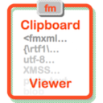
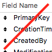
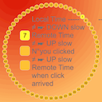
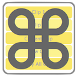
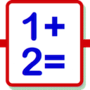
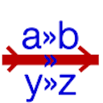
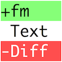
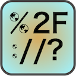
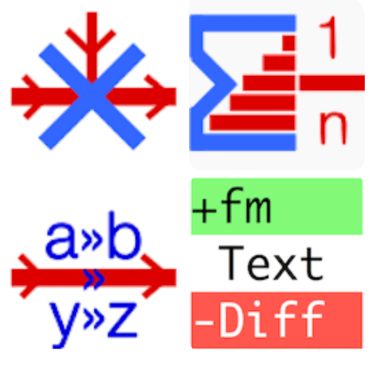
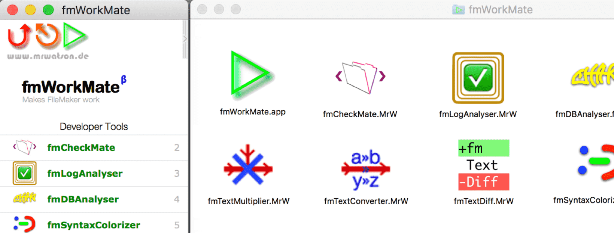

- Help
- fmAutoMate
- fmCheckMate
- fmCheckmate-XSLT
- fmClipboardViewer
- fmDBAnalyser
- fmIDE
- fmKillDefaultFields
- fmLatencyMeter
- fmLaunchPad
- fmLogAnalyser
- fmMetaMate
- fmModifierKeys
- fmPasteMate
- fmPluginInfo
- fmPluginMate
- fmScriptWorkspace
- fmSetupAssistant
- fmSimpleCalculator
- fmSyntaxColorizer
- fmTextConverter
- fmTextDiff
- fmTextMultiplier
- fmTextSeries
- fmThings
- fmUrlDecode
- fmWorkMate
- fmWorkMate Clip and Key Tools
- fmWorkMate Developer Tools
- fmWorkMate Integration Tools
- fmWorkMate More Utilities
- fmWorkMate Setup Utilities
- fmWorkMate Text Tools
- MrWatson’s tools
- myMateJson

Help
Help is at hand…
Well done! You made it to the help page!
And I, at last, made the help page!
Amazing!
🔍 Know what you are looking for?
- Try the search box at the top of the page to search fmWorkMate.com
- or choose the tool / topic from the A-Z page contents →
- or use the ← navigation to browse the structured site contents
📖 Learn by reading?
- Try starting with our FAQ,
- or read MrWatson’s Solutions to daily FileMaker Problems
- or checkout the blog on mrwatson.de for more in-depth articles
📽️ Prefer to learn by watching?
- Checkout my Training Videos Page
- There’s a few videos on the fmWorkMate You Tube Channel
🤹 Or perhaps learning by doing?
- Try jump starting your FileMaker development with hands-on fmWorkMate
💡 Or perhaps you know what you want to do
- but don’t know how? 🧐
🌌 Are you lacking the big picture?
- Take a look at how MrWatson’s Tools work together as a system of integrated tools
- Check out the Case Study: Backporting an e-Invoice Solution for GBS GmbH for a real-world example of how fmWorkMate & co. worked together to solve a bunch of problems.
😃 Just need somebody to talk to?
Some tips from the Beatles:
“I need somebody, Help!”
- 💬 Try the fmWorkMate discussions centre
“Not just anybody, Help!”
- 🗣️ Or try MrWatson’s Slack Channel for a slightly more cosy chat?
“You know I need someone, Help!”
- 📧 for an unusual level of direct support try dropping MrWatson a line at russell[at]mrwatson.de
fmAutoMate
About fmAutoMate
fmCheckMate
About fmCheckMate

fmCheckmate-XSLT
About fmCheckmate-XSLT

fmClipboardViewer
About fmClipboardViewer
fmDBAnalyser
About fmDBAnalyser
fmIDE
About fmIDE

fmKillDefaultFields
About fmKillDefaultFields

fmLatencyMeter
About fmLatencyMeter
fmLaunchPad
About fmLaunchPad
fmLogAnalyser
About fmLogAnalyser
fmMetaMate
About fmMetaMate
fmModifierKeys
About fmModifierKeys

fmPasteMate
About fmPasteMate
fmPluginInfo
About fmPluginInfo
fmPluginMate
About fmPluginMate
fmScriptWorkspace
About fmScriptWorkspace
fmSetupAssistant
About fmSetupAssistant

fmSimpleCalculator
About fmSimpleCalculator
fmSyntaxColorizer
About fmSyntaxColorizer

fmTextConverter
About fmTextConverter

fmTextDiff
About fmTextDiff
fmTextMultiplier
About fmTextMultiplier
fmTextSeries
About fmTextSeries
fmThings
About fmThings

fmUrlDecode
About fmUrlDecode
fmWorkMate
About the fmWorkMate toolbox
fmWorkMate Clip and Key Tools
About fmWorkMate Clip and Key Tools
fmWorkMate Developer Tools
About fmWorkMate Developer Tools
fmWorkMate Integration Tools
About fmWorkMate Integration Tools
fmWorkMate More Utilities
About fmWorkMate More Utilities
fmWorkMate Setup Utilities
About fmWorkMate Setup Utilities

fmWorkMate Text Tools
About fmWorkMate Text Tools

MrWatson’s tools
About MrWatson’s tools
myMateJson
About myMateJson